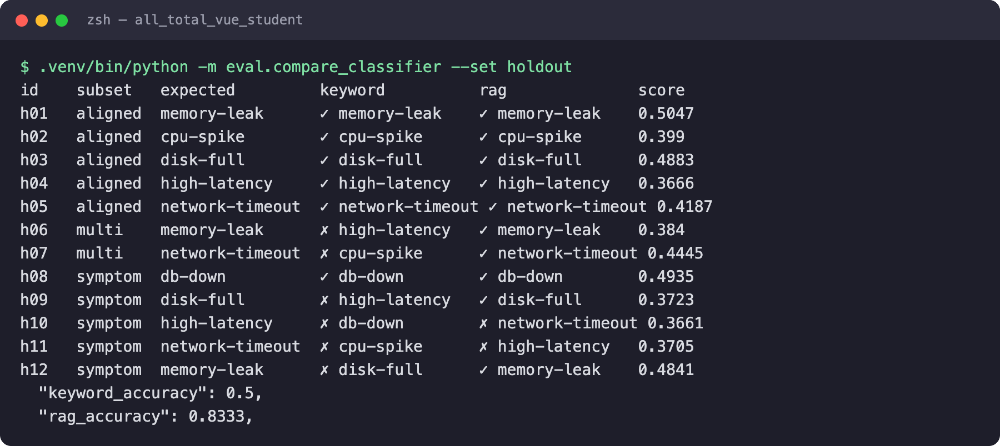
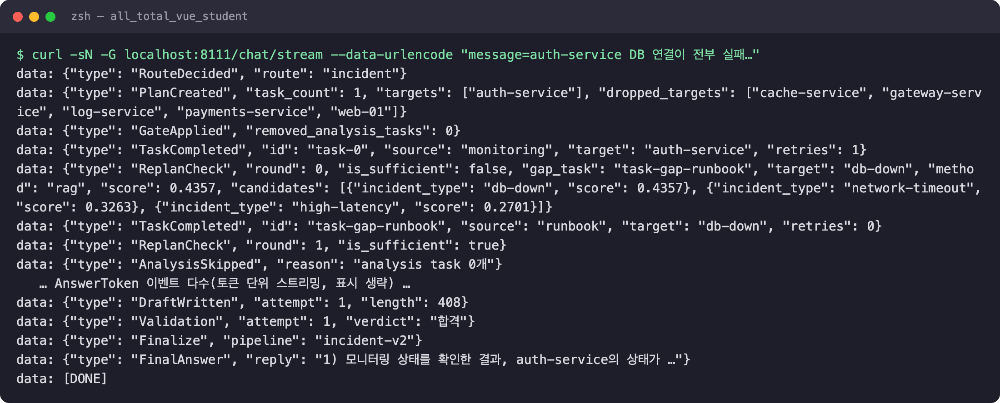
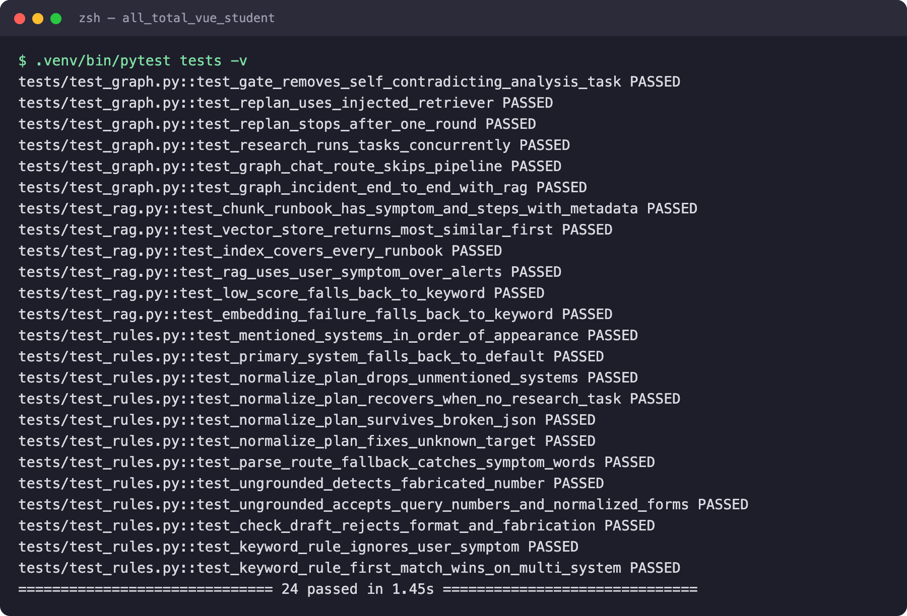
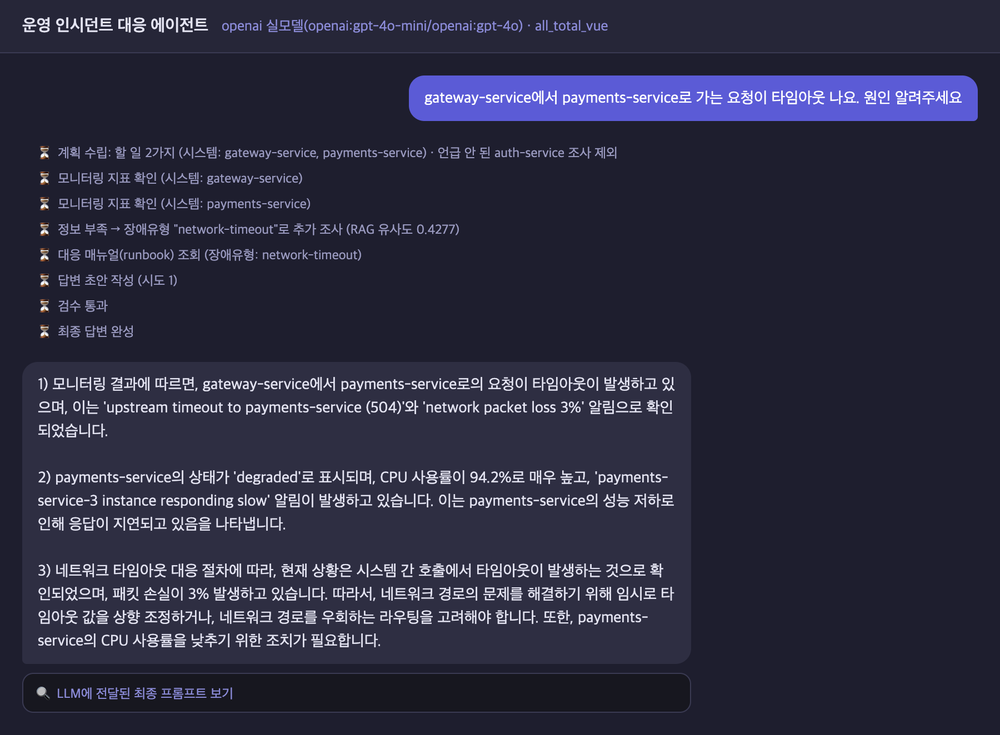
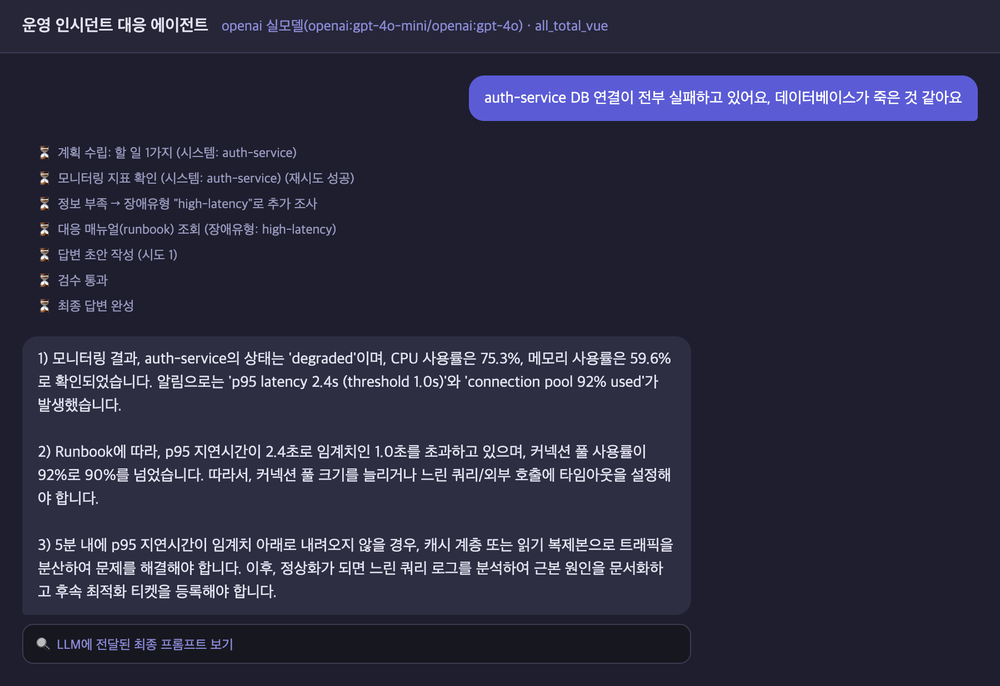
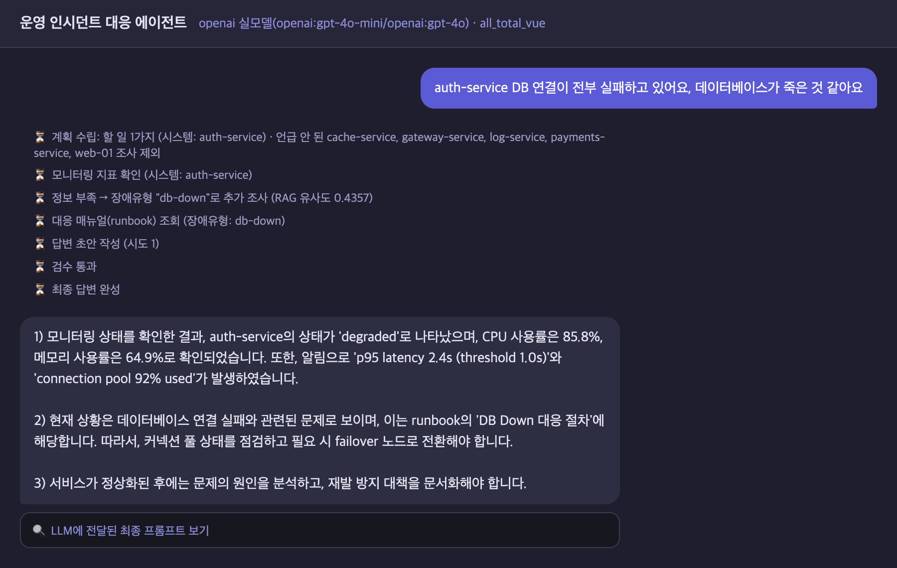
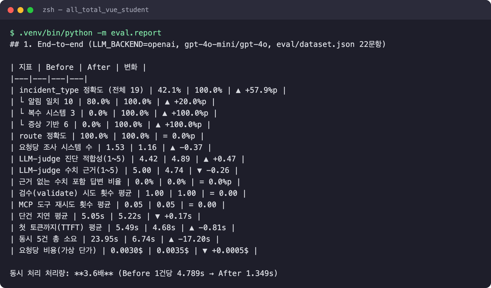
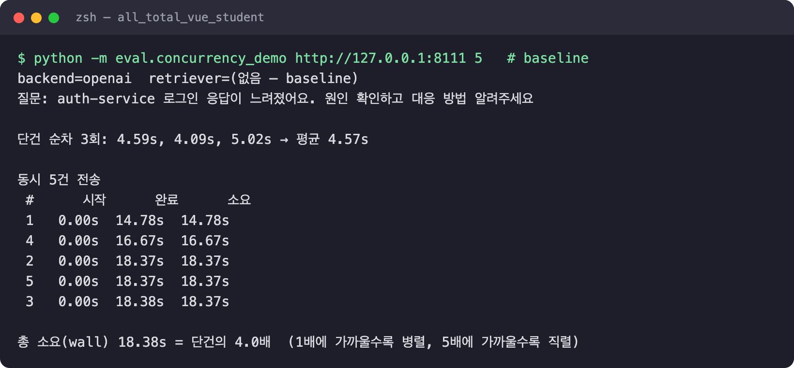
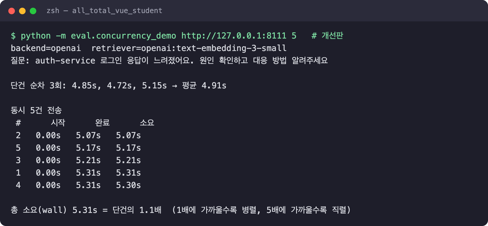

RAG 분류 · 비동기 동시성 · 과잉 조사 차단 · 수치 근거 검증 — 같은 입력으로 Before/After 실측
광주 1반 · G007 · 나용성 · 2026.10
"auth-service DB가 죽은 것 같아요" 같은 질문을 받으면
① MCP Tool로 모니터링 지표를 조회하고
② 장애유형을 정해 MCP Resource로 대응 매뉴얼(runbook)을 읽고
③ 지표·매뉴얼만 근거로 진단과 대응 절차를 답한다.
FastAPI + LangGraph, SSE로 진행 단계를 실시간 표시한다.
| 분류 | 알림 키워드 순서로 장애유형 결정 — 사용자 증상 무시 | 정확도 42.1% |
| 동시성 | async 안에서 동기 HTTP + MCP 전역 Lock | 동시 5건 = 1건×5 |
| 계획 | 언급 안 된 시스템까지 조사 → 알림 혼입 | 최대 6개 조회 |
| 검증 | "30자 + 1) 포함"만 확인 | 수치 날조 통과 |
| 개선 | 무엇을 | 결과 |
|---|---|---|
| ① RAG 분류 | 키워드 규칙 → runbook 임베딩 의미 검색 (+폴백) | 42% → 100% |
| ② 동시성 | AsyncClient · MCP Lock 제거 · 실제 토큰 스트리밍 | 처리량 3.6배 |
| ③ Plan 보정 | 언급 안 된 시스템 조사를 코드로 차단 | 1.53 → 1.16개 |
| ④ 수치 검증 | 초안 숫자가 수집 사실에 없으면 반려·재작성 | LLM 비용 0 |
| ⑤ 모듈화 | graph.py → nodes/·rag/, 백엔드 중복 → llm_common.py | 배선/구현 분리 |
원본·개선판을 같은 코드로 측정. holdout 12문항, LLM-judge, TTFT, 동시성
stub 주입, 1.4초, 네트워크 0. 정규식 버그 1건을 잡아냄
웹 UI에 RAG 유사도·제외한 시스템·반려 사유 노출
| 기술 | 원본 | 개선 · 추가 | 위치 |
|---|---|---|---|
| Multi-Agent | Supervisor(route) → Planner가 task를 research/analysis 에이전트에 배정 → Writer → Validator | research 워커 N개가 실제로 동시 실행되게 async화, Planner 출력을 코드로 보정 | agent/nodes/* |
| MCP | Tool·Resource·Prompt 3종, stdio, find_*로 서버 탐색 | 전역 Lock 제거 — 세션이 요청 id로 응답을 짝지어 동시 호출 가능 | mcp_client.py |
| RAG | 없음 (키워드 규칙) | 신규 — runbook 34청크 임베딩, 증상 0.75 + 알림 0.25, 폴백 | agent/rag/ |
| 의존성 주입 | SupervisorDeps + partial | retriever 주입 · create_deps 팩토리 · RAG_ENABLED 스위치 · 테스트 stub | deps.py · server.py |
| LangSmith | 노드별 @traceable | 검색 단계를 run_type="retriever"로 추가, 후보 점수 기록 | rag/retriever.py |
| 모듈화 | graph.py 한 파일, 프롬프트 복붙 3곳 | 배선만 남기고 nodes/ 6 · rag/ 4 · 공용 llm_common.py | agent/ |
| 단위 테스트 | 없음 | 신규 24개 — 그래프 e2e · 병렬성 · RAG 폴백 3경로 · 회귀 | tests/ |
| 스트리밍 | 완성된 답을 한 번에 전달 | OpenAI stream=True → 토큰 단위 SSE 중계 | openai_llm.py |
data/runbooks/*.md (6종)
└ chunk → [제목+대표 증상] 1개
[제목+절차 한 줄] N개
metadata.incident_type
│ text-embedding-3-small
▼ (디스크 캐시)
InMemoryVectorStore · 34청크 · 코사인
score(유형)
= 0.75 × sim(사용자 증상)
+ 0.25 × sim(언급된 시스템 알림)
→ 1등 유형
score < 0.25 · API 오류
→ 키워드 규칙 폴백 (멈추지 않음)

실행 캡처 — 튜닝에 쓰지 않은 holdout 12문항, LLM 없이 분류기만 비교. 키워드 규칙 50.0% → RAG 83.3%. h10·h11은 RAG도 틀림(한계 장에서 설명)

실행 캡처 — 개선판 /chat/stream SSE 원본 출력. AnswerToken 이벤트와 각 줄의 node 필드, 최종 답변 본문은 생략
1PlanCreated — Planner가 고른 6개 시스템 중 질문에 없는 5개를 dropped_targets로 제외
2ReplanCheck — RAG가 db-down 선택(0.4357). 상위 3후보 점수까지 전달
3TaskCompleted — MCP Tool(monitoring, 재시도 1회 성공) · MCP Resource(runbook) 조회
agent/
├ graph.py 배선만 (노드·분기)
├ deps.py SupervisorDeps
├ state.py · systems.py
├ llm_common.py 프롬프트·plan 정규화
├ grounding.py 수치 근거 검사
├ nodes/ route plan research
│ replan analysis write
└ rag/ embedder vector_store
retriever keyword
build_graph(deps)가 partial(fn, deps=deps)로 모든 노드에 주입한다. 테스트는 StubMCP·fake LLM·HashEmbedder를 넣은 deps 하나로 그래프 전체를 돌린다.

실행 캡처 — 24개 전부 통과, 1.4초, 외부 네트워크 호출 0

1계획 수립 — 질문에 나온 gateway·payments만 조사, auth-service는 제외
2모니터링 ×2 — research 워커 2개가 MCP Tool을 동시에 호출
3RAG 판정 — network-timeout (유사도 0.4277). 원본은 CPU 알림에 끌려 cpu-spike
4검수 통과 — 답변 속 수치가 모두 수집된 지표·알림에 있어 반려 없이 1회 통과
5최종 답변 — 토큰 단위로 흘러나오며 1)~3) 형식
LLM_BACKEND=openai (gpt-4o-mini / gpt-4o) · web_demo_server → server.py

알림의 "p95 latency" 키워드가 먼저 걸려 지연 대응 절차(캐시·읽기 복제본)를 안내

사용자 증상으로 DB 장애 매뉴얼을 골라 failover 절차를 안내. 언급 안 된 5개 시스템 조사 제외

실행 캡처 — 평가셋 22문항을 원본·개선판에 같은 하네스로 실행한 결과 집계
judge 진단 적합성 4.42→4.89 · TTFT −0.81s · 조사 시스템 수 −0.37
단건 지연 +0.17s · 비용 +17% · judge 수치 근거 −0.26
검수 시도·재시도 횟수는 변화 없음 (1.00 / 0.05)


평가 하네스(그래프 직접 호출, 22문항 셋)에서도 23.95s → 6.74s, 3.6배로 같은 경향이다.
# 원인 (baseline) openai_llm.py: async 노드 안에서 동기 httpx.post → 이벤트 루프 정지 # mcp_client.py: async with self._lock → 모든 MCP 호출 직렬화 # 수정 httpx.AsyncClient + await, Lock 제거 (ClientSession이 요청 id로 응답 매칭)
임베딩 1회로 단건 +0.17s, runbook 증상 섹션만큼 프롬프트가 길어져 비용 +17%. 정확도를 위해 감수했다.
평가셋과 증상 문구를 같은 사람이 썼다. 의미를 모르는 해시 임베딩도 100%가 나와서, 실성능은 holdout 83.3%로 본다.
"느림"과 "시간 초과"가 임베딩 공간에서 가깝다(h10·h11). 가중치 0.75/0.25·임계값 0.25는 최적화한 값이 아니다.
수치 검사는 문자열 매칭이라 2.4s↔2400ms를 놓친다. LLM-judge는 "데이터 없음"이라는 정직한 답을 감점했다(2건).
언급 안 된 시스템 차단은 보고 싶던 연관 시스템까지 막을 수 있다. 공유 stdio MCP 서버 1개가 다음 병목이다.
점수 차가 작을 때만 LLM이 6개 유형에서 재판정 · LangSmith Dataset으로 실험 비교 · 재시작 제안 전 interrupt() 승인